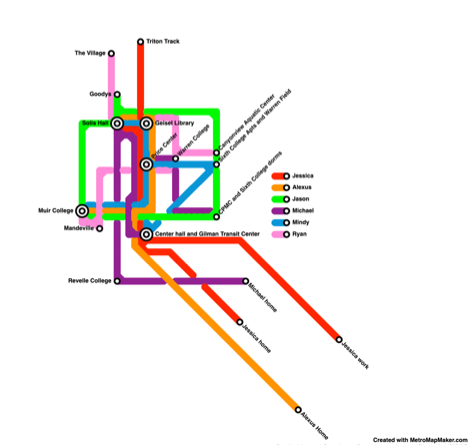
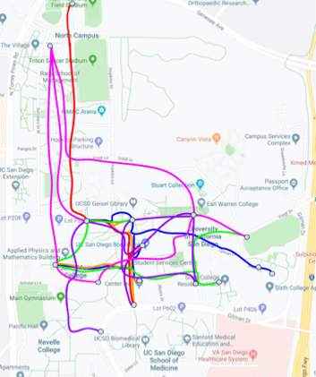

Created a map of everyone's routes in a typical day of their life. Expanded on points of intersection or frequently visited places as "stops" in the map.
First we individually drew out our paths on a map and combined them on the same map.
Then we identified places that we all visited, described what we did at those locations, and then turned those into bus stops.
| Price Center: | |
|---|---|
| Mindy: | I go to Price Center to eat food and attend one of my classes. My class is at 11am, and during that time Price Center is usually busy and crowded. There are people sitting outside and on the second floor. There are people lying on the hammocks. Price Center is an intersection for all of us, and this is reflected by its location in the middle of campus, the food and other stores it has, and the events and classes taking place. I usually just eat Panda Express. |
| Jessica: | I have an 11am class in the warm and stuffy theatre that serves as a lecture hall, with seats that make everything too comfy for me to pay attention properly. There is usually no internet and I struggle for 15 minutes to get it working before I can take lecture notes. I spend spare time before class on my laptop in the lobby area where clusters of other people wait for class to start. I rush out of class a couple minutes early to microwave my food in the food court, and eat at the tables in front of Panda Express before I need to make it to the bus stop again. |
| Alexus: | I come to price center to destress , I eat my lunch and catch up on youtube videos. During the time I’m there is always packed with people eating, conversing, working etc. No matter the day it always loud with different conversations in the background. I like be be away from people so I find a table that is located usalley on the second floor. After finishing my lunch I just chill there till it’s time for my next class. |
| Michael: | I also have an 11AM class so I usually stop by PC to go eat lunch here. I usually like to sit on the first floor, eating and then afterwards reading. It’s always crowded here and a lot of people are either studying, eating, rushing by, or waiting for Panda Express. It’s usually quite warm and slightly noisy in here, but to me, it’s a comfortable place to sit down and relax before the next class. |
| Center Hall & Gilman Transit Center: | |
| Mindy: | Two of my classes are located at Center Hall. One of my classes is a discussion, and it is located on the second floor. It is a lab, and sometimes we get to go outside of Center Hall. One thing I discovered this year, thanks to this lab, is that there is a small courtyard located behind Center Hall. I rarely go off campus, but when I do, I go by bus at the Gilman Transit Center which is by Center Hall. |
| Jessica: | Gilman Transit Center is my entry point to campus every day; the bus stops link my home to school and serves as my main mode of transportation. Center Hall is where I go to attend my 8am class. I walk up 3 flights of stairs, which usually leaves my legs burning because I’m rushing to make it on time. In the end, I usually arrive a couple minutes late due to bus delays and meet a sleepy class with a professor that has already started lecture. |
| Alexus: | I use center hall as my go to walking path , I honestly get lost on campus sometimes so I always revert to this hall to help me get around. I then walk my way to Gilman transit center is always crowded with many people waiting for a bus to go to their next destination. I wait for the rapid 150 bus to come here so that I can make my way back home. I prepare my compass app with my bus pass. The bus I need comes every 15 minutes, so i sit on the bench listen to my music and wait. |
| Michael: | Gilman Transit Center is my last stop every day. I have to take the bus to go home every day. It’s usually crowded with people here, but the buses come very often so it’s not too bad. I come back on my busiest day at 6. It’s around the time when it gets dark. When the bus arrives, people crowd in, including me, with their compass apps, and once they get in, they sit and melt on their seats with their phone. I usually do the same. Time to time, I like to sit, look out and meditate in prayer. | Solis Hall: |
| Mindy: | I wake up at 8 in the morning and walk to Solis Hall for COMM 10. I usually arrive at least 5 minutes before class starts at 9. A lot of people are also there before class starts, waiting outside the building and outside the lecture hall entrances. There’s some hassle with transitioning from the math class inside to the communications class that is next, with students crowding the entrances, both trying to get in and out. Later I found that it might be better to arrive at Solis Hall 5 minutes after 9 because it is usually less crowded then, and the professor plays music for a few minutes as students come in. |
| Jessica: | I attend a 9am lecture for COMM 10 at this location, usually arriving a couple minutes late to a room blasting with pop music and the chattering of 300 students. I squeeze past the legs of the tight seating arrangement to sit next to Mindy and Alexus, the group we’ve established for the quarter, at the back of the class. Sitting at the back of the class really exposes what people are actually doing during class. I witness people sneaking onto their phones and scrolling through instagram or texting. Others struggling to keep up with the note taking. |
| Alexus: | My 9 am Communication is located in this building here I am with 200 hundred other students, so I tend to arrive early to get a seat that works well with me. The layout of the classroom is quite big, it’s almost like a dome like layout. The teachers is at the bottom with the seats of students are expanded upwards. The class in itself is quite warm, I’m usually wearing a jacket in the morning but once coming into class I take it off. For the whole entirety of the class I just sit and listen. |
| Jason: | I walk from my 8am in Ledden Auditorium to Solis Hall for my COMM 10 lecture. I would typically arrive decently early (maybe 5 min but that’s early in my books) and typically sit in the same seat every time. Later, Michael would come and sit next to me and the bustling lecture hall would quiet down as class began. The classroom itself is as close to comfortable as you can get with around 300 students fit into a room and is the largest lecture room that I’ve ever been in. |
| Michael: | When I get to school it’s usually 8:50. I have 10 minutes to get from Revelle to Solis Hall. I usually rush down by fast walking, When I finally arrive, I’m usually a bit heated up and a little hot. The class is usually crowded already when I come in. I typically see Jason in the back row, sitting tiredly just as usual, and usually I come and sit next to him as the video in the background plays and the class gets completely filled. It’s quite relaxing and comfy here, but it’s always nice that I get to sit next to Jason. |
| Ryan: | I start walking from The Village to Solis Hall at around 8:45, it takes about 15 minutes to get to Solis Hall for my comm10 lecture. I usually arrive to class on time or a little late. The class is usually already filled up when I arrive so i’ll take a seat at the back of the class with Jason and Michael. There will always be music playing on the projector by the professor. The classroom has about 300 students and we all stay quiet when the professor speaks. Some people will be texting or scrolling through social media during the class and the professor will get mad if he sees people using their phones. |